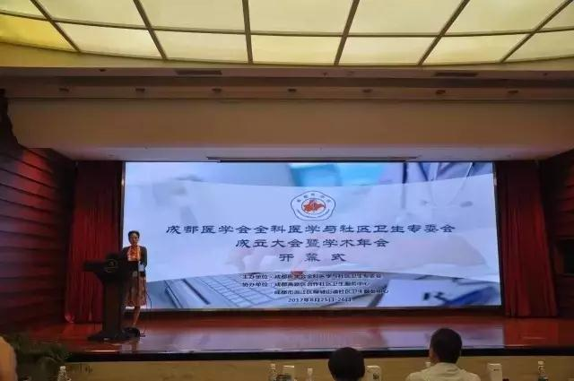

请使用微信扫一扫
下载“途欢健康”App注册登录


09-05
20172017年8月26日，由成都医学会主办，成都高新区合作社区卫生服务中心、成都市温江区柳城社区卫生服务中心协 的“成都医学会全科医学与社区卫生专委会成立大会暨学术年会”在成都市天使宾馆隆重开幕。
参会人员由成都市医学会全科医学专委会委员，基层医疗机构的社区卫生服务专家及医务人员组成，共250余人， 四川途欢医疗健康科技有限公司受邀参与。
本届学术年会围绕“携手共进、发展全科、推动签约”为主题，就全科医疗相关进展、 全科医学教育、社区卫生发展、家庭医生签约、全科与社区卫生信息化建设等开展学术交流。
成都医学会会长龚怀宇为本次大会致开幕词，龚会长首先对专委会的成立表示了热烈的祝贺。
龚会长表示，成都医学会全科医学与社区卫生专委会是成都医学会第47个专委会， 专委会的成立标志着成都医学会的组织建设有了一个新发展，学科建设有了进一步....
家庭医生服务专场
据悉，到2017年，家庭医生签约服务覆盖率达到50%以上，重点人群签约服务覆盖率达到70%以上。
在严峻的的签约形势下，成都医学会全科医学与社区卫生专委会和途欢强强联手：协同现有医疗体制，搭建服务于家庭医生的平台；助力社区医疗，致力于普惠的全民健康管理。
途欢的愿景
途欢致力于搭建起用户和医生的桥梁：对于用户，通过市场和运营让用户知道家庭医生，了解家庭医生的好处，愿意接受家庭医生服务；对于社区，通过服务和系统让医生对患者的管理更省时，更精准。医生和用户通过途欢这个平台，各需所求。
下午6点，成都医学会全科医学与社区卫生专委会成立大会暨学术年会正式结束，并进行了颁奖仪式 大会闭幕式由专委会副主委、四川省人民医院陈红主任致闭幕词：希望通过本次年会，搭建起全科、 社区学术交流及技术推广的平台，成为基层卫生机构与上级各级卫生部门连接的纽带，让我们热爱全科医学 、扎根社区、携手共进、推动签约，促进全科及基层医疗的发展
创新医疗义不容辞
途欢的价值
1.持续的健康服务
拥有一名固定、熟悉的家庭医生，长期为您预防疾病、管理疾病、维护健康。通过APP/微信，随时随地联系您的家庭医生。 健康顾问将通过面访、7×24h电话、APP、 微信等方式，为您提供在线咨询与导诊指导。
持续、主动、有针对性地健康随访，跟踪您的健康/诊疗计划的执行情况。
2.疾病时适需的医疗协助
如您不幸罹患疾病，可为您连接至适需的三甲医院、医学专家等医疗资源
3.综合全面的健康评估
建立个人终身健康记录家庭医生将采集您的健康史/疾病史，设计更个性化、更精准的体检方案，评估健康状况及风险，制定健康/诊疗计划。论您在何时何地发生任何医疗需求， 您的个人健康终身记录将帮助医生做出更精准的诊疗决策
4.以家庭为单位的健康关怀体系
以家庭为单位，覆盖全生命周期的健康服务，为您免除后顾之忧。